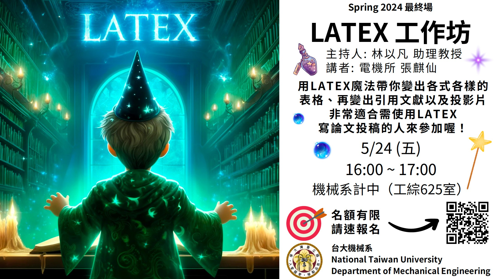
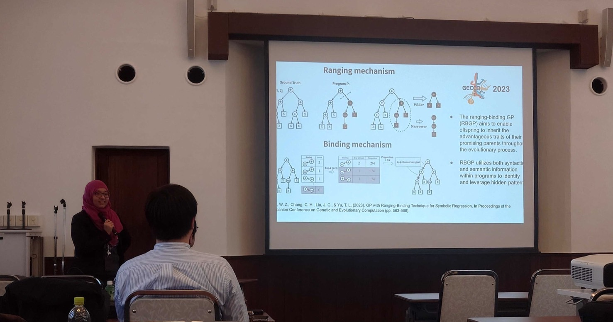
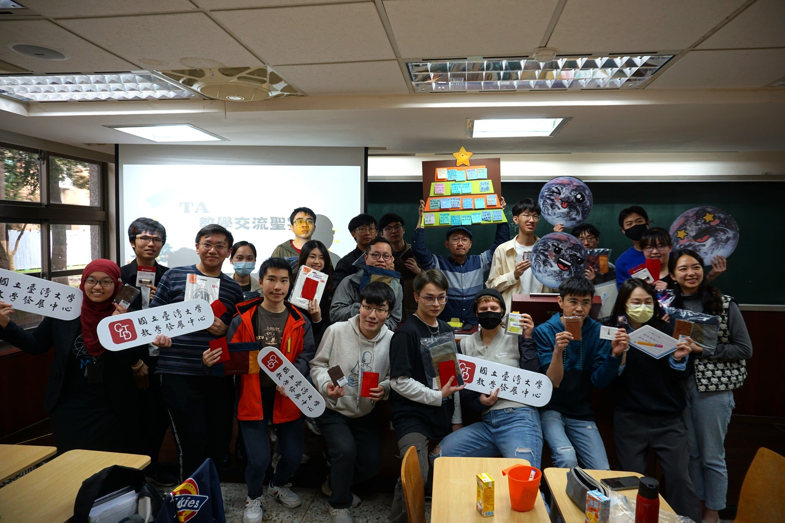
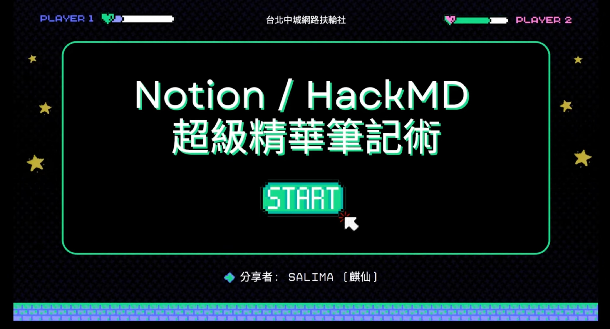

-
Python, National Taiwan University, February 2022 - Current
Mentored 100+ students in their team projects and contributed to designing assignments.
Earned 4.35/5.0 score from students' feedback on the teaching assistant's course evaluation.
-
C#, National Taiwan University, July 2022 - August 2022
Received the National Summer College Excellent Teaching Assistant Award.
Earned 4.89/5.0 score from students' feedback on the teaching assistant's course evaluation.
-
Genetic Algorithms, National Taiwan University, February 2021 - June 2021
Took notes during lectures and shared them for review after class.
Earned 4.96/5.0 score from students' feedback on the teaching assistant's course evaluation.
-
Artificial Intelligence and Machine Learning, National Taiwan University, September 2018 - January 2019
This course is taught in English.
Earned 4.0/5.0 score from students' feedback on the teaching assistant's course evaluation.
-
Calculus, National Chengchi University, September 2015 - June 2016
Assisted in a calculus tutorial session by answering students' questions.
|

|
LaTeX Paper Workshop
(Mechanical Engineering Department at National Taiwan University, May 2024)
Teaching Taiwanese graduate students how to effectively utilize LaTeX for academic writing, including detailed instructions on creating various types of tables and accurately citing scholarly references. Additionally, instruction on how to effectively use LaTeX for creating PowerPoint-like presentations.
|
|

|
The Research on Genetic Algorithm and Genetic Programming
(Japan Science and Technology Agency - Sugiyama CREST Meeting at Kyoto University, March 2024)
Researchers involved in the JST CREST research project "Machine Learning that connects to Symbolic
Reasoning" will participate and present their research to exchange insights and promote research progress.
|
|

|
Facilitating discussions on teaching challenges and solutions
(Center for Teaching and Learning Development at National Taiwan University, December 2023)
Serving as the event host, I facilitate discussions among teaching assistants to address various teaching challenges, pinpoint appropriate solutions, and enhance practical skills.
|
|

|
Notion/HackMD Note-taking Tutorial
(Rotary Club of Taipei Midtown, February 2023)
Record video
Teaching how to utilize Notion/HackMD software, covering its versatile functionalities such as creating tables, adjusting font settings, incorporating reminders, fostering teamwork collaboration, addressing audience inquiries, and sharing personal learning experiences and techniques.
|

|
Sharing of Excellent Teaching Assistant Experiences
(National Summer College at National Taiwan University, December 2022)
Record video
Sharing experience as a teaching assistant, including strategies for transitioning from physical to online courses, effective teaching techniques, fostering students' problem-solving skills, and integrating future large-scale language model tools.
|
|